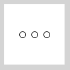

Bislang scheinen Arrays nur eine umständliche Art zu sein, schnell viele Variablen zu erzeugen. Ihre volle Kraft entfalten Arrays aber erst im Zusammenspiel mit Schleifen.
Array initialisieren
Wenn du einen großen Array erschaffst, möchtest du die Anfangswerte nicht für jedes Element einzeln setzen. Das Setzen der Anfangswerte nennt man auch Initialisieren. Also verwenden wir eine Schleife, um z.B. alle Werte auf 10 zu setzen:
int[] foo = new int[1000]; // integer-Array mit 1000 Elementen
for (int i = 0; i < 1000; i++) {
foo[i] = 10;
}Vielleicht möchtest du die Elemente auch auf die Werte 100, 110, 120, ... setzen:
for (int i = 0; i < 1000; i++) {
foo[i] = 100 + i * 10;
}Arraywerte einsetzen
Schleifen spielen nicht nur beim initialisieren von Arrays eine wichtige Rolle. Wenn du z.B. Koordinaten von zufällig platzierten Rechtecken in zwei Arrays speicherst, dann erschaffst und initialisierst du zunächst zwei Arrays (mit Zufallswerten) und verwendest dafür eine Schleife.
int[] xArray = new int[100];
int[] yArray = new int[100];
for (int i = 0; i < 100; i++) {
xArray[i] = int(random(100)); // Zufallswerte von 0-100 generieren
yArray[i] = int(random(100)); // Zufallswerte von 0-100 generieren
}Dann verwendest du zum Zeichnen der Rechtecke ebenfalls eine Schleife:
for (int i = 0; i < 100; i++) {
rect(xArray[i], yArray[i], 30, 30);
}Vielleicht möchtest auch alle Werte der zwei Arrays auf der Konsole ausgeben. Auch dazu kannst du eine Schleife verwenden:
for (int i = 0; i < 100; i++) {
println("x: " + xArray[i] + ", y: " + yArray[i]);
}In diesem speziellen Fall könnte man das Zeichnen und das Print auch in die obere Schleifen mit einbauen. Bei einer Animation findet das Initialisieren aber oft im setup statt und das Zeichnen in draw. Wir sehen dazu gleich ein Beispiel.
Beispiel: Animation vieler Bälle
Jetzt ein praktisches Beispiel: Wir lassen drei Bälle über den Bildschirm fliegen. Dazu verwenden wir einen Array für die x-Koordinate der drei Bälle. Zunächst mal ohne Schleifen.
int[] xarray = new int[3]; // erzeugen
void setup() {
// initialisieren
xarray[0] = 0;
xarray[1] = 20;
xarray[2] = 40;
}
void draw() {
background(255);
// Werte verwenden
ellipse(xarray[0], 50, 10, 10);
ellipse(xarray[1], 50, 10, 10);
ellipse(xarray[2], 50, 10, 10);
// Werte hochzählen
xarray[0]++;
xarray[1]++;
xarray[2]++;
}
Wir haben jetzt drei Bälle und ein Array mit drei Elementen. Wir hätten genauso schreiben können:
int x1;
int x2;
int x3;
void setup() {
x1 = 0;
x2 = 20;
x3 = 40;
}
void draw() {
background(255);
ellipse(x1, 50, 10, 10);
ellipse(x2, 50, 10, 10);
ellipse(x3, 50, 10, 10);
x1++;
x2++;
x3++;
}Der Vorteil der Array-Lösung? Wir können die einzelnen Elemente mit Hilfe einer Schleife durchlaufen. Nehmen wir an, wir wollen ein Array mit lauter 5en füllen. Das müsste man so machen:
int[] fuenfer = new int[10];
fuenfer[0] = 5;
fuenfer[1] = 5;
fuenfer[2] = 5;
fuenfer[3] = 5;
fuenfer[4] = 5;
fuenfer[5] = 5;
fuenfer[6] = 5;
fuenfer[7] = 5;
fuenfer[8] = 5;
fuenfer[9] = 5;Wir sehen aber: alles bleibt gleich, bis auf den Index (die Zahl in Klammern). Also könnten wir diese Zahl durch eine Laufvariable in einer Schleife ersetzen:
for (int i = 0; i < 10; i++) {
fuenfer[i] = 5;
}Sehen wir uns die Entwicklung der Dinge in der Schleife an. Es wird die Laufvariable i rundenweise hochgezählt. Bevor der Code ausgeführt wird, wird noch die Schleifenbedingung i < 10 geprüft. Ist diese false, ist die Schleife fertig.
| Durchlauf | i | i < 10 | Code |
| 1 | 0 | true | fuenfer[0] = 5 |
| 2 | 1 | true | fuenfer[1] = 5 |
| 3 | 2 | true | fuenfer[2] = 5 |
| 4 | 3 | true | fuenfer[3] = 5 |
| 5 | 4 | true | fuenfer[4] = 5 |
| 6 | 5 | true | fuenfer[5] = 5 |
| 7 | 6 | true | fuenfer[6] = 5 |
| 8 | 7 | true | fuenfer[7] = 5 |
| 9 | 8 | true | fuenfer[8] = 5 |
| 10 | 9 | true | fuenfer[9] = 5 |
| 11 | 10 | false | --- |
In unserem Ball-Beispiel von oben kann man zwei Schleifen einfügen. In der ersten Schleife wird die x-Startposition mit i * 20 berechnet. In drei Durchläufen ergibt sich jeweils: 0 * 20, 1 * 20 und 2 * 20, also 0, 20, 40.
int[] xarray = new int[3];
void setup() {
for (int i = 0; i < 3; i++) {
xarray[i] = i * 20; // berechne x-Startposition
}
}
void draw() {
background(255);
for (int i = 0; i < 3; i++) {
ellipse(xarray[i], 50, 10, 10); // zeichnen
xarray[i]++; // hochzählen
}
}Diese Lösung ist nicht nur kürzer, sondern auch mächtiger. Wir können nämlich mit einem Fingerschnipp die Anzahl der Bälle erhöhen, z.B. auf 5. Dazu müssen wir an drei Stellen im Code die 3 durch 5 ersetzen.
Größe des Arrays verwenden
Die Lösung oben lässt sich verbessern, indem man in die For-Schleife die Größe des Arrays mit
xarray.length einsetzt, zum Beispiel in der unteren Schleife:
for (int i = 0; i < xarray.length; i++) {
ellipse(xarray[i], 50, 10, 10); // zeichnen
xarray[i]++; // hochzählen
}Wenn wir dies für beide Schleifen tun, dann müssen wir nur noch eine Stelle ändern, um die Anzahl der Bälle anzupassen: ganz oben.
// optimale Lösung
int[] xarray = new int[3];
void setup() {
for (int i = 0; i < xarray.length; i++) {
xarray[i] = i * 20;
}
}
void draw() {
background(255);
for (int i = 0; i < xarray.length; i++) {
ellipse(xarray[i], 50, 10, 10);
xarray[i]++;
}
}Probier es aus: setze bei int[3] oben eine andere Zahl ein. Versuche 2 oder 10 oder nur eine 1. Alles kein Problem.
Zusammenfassung
Arrays und For-Schleifen sind die perfekten Partner. Mit einer For-Schleife kannst du ganz leicht einen kompletten Array befüllen (z.B. alle Elemente mit der Zahl 0 oder mit einer Zufallszahl).
int[] xarray = new int[3];
for (int i = 0; i < 3; i++) {
xarray[i] = 0;
}Außerdem kannst du mit einer Schleife alle Elemente eines Arrays abrufen, z.B. um Dinge zu zeichnen (wenn ein Array etwa die x-Koordinate enthält).
for (int i = 0; i < 3; i++) {
ellipse(xarray[i], 50, 10, 10);
}Arrays sind eigentlich Objekte. Mit der Objekteigenschaft length kannst du die Länge eines Arrays herausfinden. Das nutzen wir in allen For-Schleifen, um den Code möglichst flexibel zu halten (d.h. der Code funktioniert auch dann, wenn die Länge sich ändert).
for (int i = 0; i < xarray.length; i++) {
ellipse(xarray[i], 50, 10, 10);
}